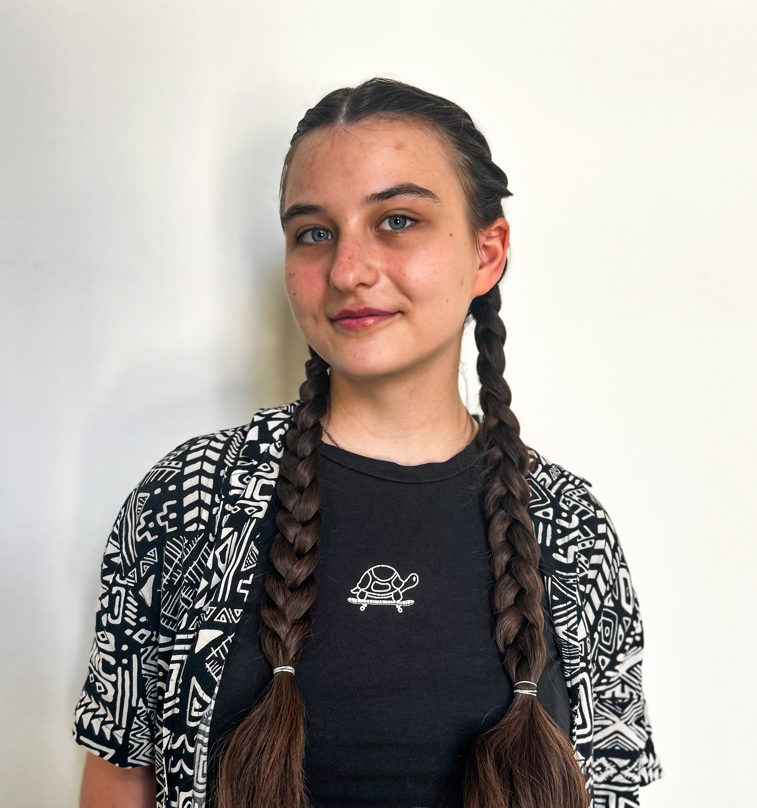
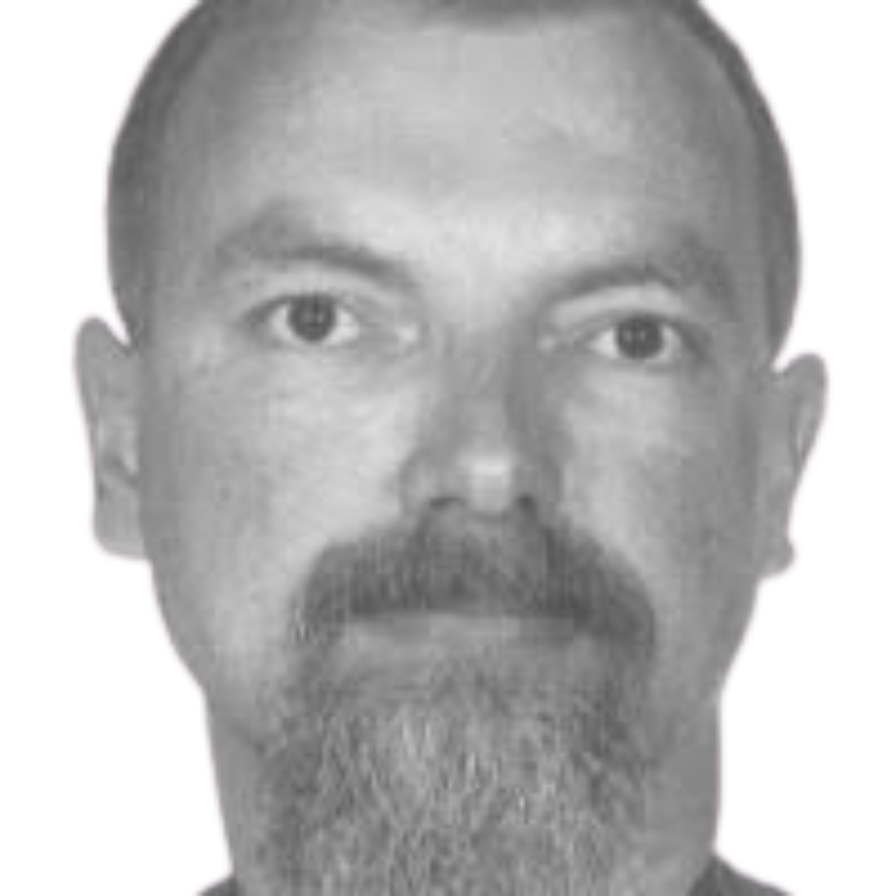

Šárka Lísková
PhD student
Czech Technical University in Prague
Computational Physics working on SNN for object learning
Šárka Lísková
PhD student
Czech Technical University in Prague
Computational Physics working on SNN for object learning
Lukáš Bartůněk
Master student
Czech Technical University in Prague
SNN solutions for eye blinking detection and classification

Olha Vedmedenko
Bachelor student
Faculty of Information Technology at CTU
SNNs on the SpiNNaker neuromorphic platform
Rayane Rocha
Bachelor student
Universidade Federal da Paraıba (UFPB)
SNNs language-based visual attention
Alexander Hadjiivanov PhD
External Collaborator – Senior Researcher
Netherlands eScience Center
Bioinspired software solutions for neuromorphic vision algorithms
Mazdak Fatahi
External Collaborator – Researcher
Université de Lille
Spiking Neural Networks for robotics applications

Bedřich Himmel
Senior Technician – Robotics Engineer
Czech Technical University in Prague
Software/Hardware solutions for robotics applications